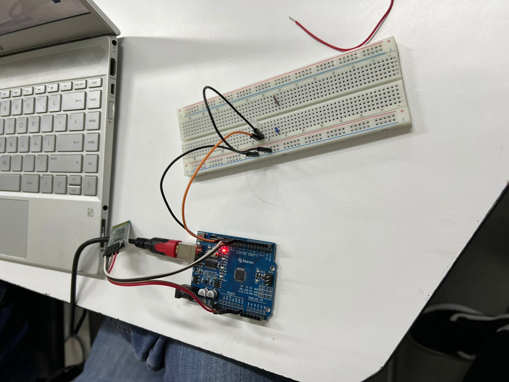

Durante esta práctica, diseñamos una aplicación para encender y apagar una luz en el celular y despues la luz de un arduino.
- Introducción -
En esta práctica, aprenderemos a usar Bluetooth para conectar un Arduino con una aplicación móvil creada en MIT App Inventor. La actividad se divide en dos partes: primero, diseñaremos una app que simule una lámpara cambiando el color de fondo entre blanco y negro; luego, crearemos una app para controlar un LED conectado a Arduino mediante Bluetooth. Este ejercicio nos permitirá combinar programación y electrónica, explorando la interacción entre software y hardware.
- Desarrollo -
Diseño de la Aplicación
- Parte 1: Simulación de Lámpara con MIT App Inventor -
Diseño de la Aplicación
Abrir MIT App Inventor:
Ve a MIT App Inventor y crea un nuevo proyecto llamado "Lampara".
Diseña la Interfaz Gráfica:
Botón 1: Etiqueta como "Encender".
Botón 2: Etiqueta como "Apagar".
Diseño de Bloques:
Configura los botones para cambiar el color de fondo de la pantalla:
Al presionar "Encender", el fondo debe cambiar a blanco.
Al presionar "Apagar", el fondo debe cambiar a negro.
Ejemplo de Bloques:
Prueba de la App:
Instala la app en tu teléfono.
Presiona los botones para verificar que el fondo cambie correctamente.
- Parte 2: Control de un LED con Bluetooth -
Diseño de la Aplicación
1. Configuración Inicial:
Nuevo Proyecto: Crea un proyecto llamado "ControlLED".
Componentes:
ListPicker: Para seleccionar y conectar al módulo Bluetooth.
Botones:
Botón 1: "Encender" (envía '1').
Botón 2: "Apagar" (envía '0').
Botón 3: "Desconectar".
Botón 4: "Cerrar App".
Bluetooth Client: Agrega el componente BluetoothClient desde la pestaña Conectividad.
2. Diseño de Bloques:
ListPicker: Muestra dispositivos Bluetooth disponibles para emparejar.
Encender/Apagar Botones: Envía '1' o '0' al módulo Bluetooth.
Desconectar: Finaliza la conexión Bluetooth.
Cerrar App: Cierra la aplicación.
- Circuito Electrónico -
Materiales:
Arduino Uno.
Módulo Bluetooth HC-05 o HC-06.
LED.
Resistor de 220Ω.
Cables de conexión.
Conexiones:
LED: Ánodo (+) al pin 13 del Arduino (a través del resistor). Cátodo (-) al GND del Arduino.
Bluetooth:
VCC: 5V del Arduino.
GND: GND del Arduino.
TX: RX3 del Arduino Mega (pin 15).
RX: TX3 del Arduino Mega (pin 14).
Alimentación: Conecta el Arduino a la computadora o a una fuente de alimentación de 9V.
- Código para el Arduino -
Descripción del Código:
El Arduino recibe comandos por Bluetooth.
'1' enciende el LED.
'0' apaga el LED.
Código Completo:
int DATO = 0; // Variable para almacenar el valor de los datos recibidos
void setup() {
Serial3.begin(9600); // Inicializamos la comunicación serial con el módulo Bluetooth
pinMode(13, OUTPUT); // Configuramos el pin 13 como salida para el LED
}
void loop() {
if (Serial3.available() > 0) { // Si hay datos disponibles para leer
DATO = Serial3.read(); // Leer el dato y guardarlo en la variable DATO
}
if (DATO == '0') { // Si el dato recibido es '0'
digitalWrite(13, LOW); // Apagar el LED
} else if (DATO == '1') { // Si el dato recibido es '1'
digitalWrite(13, HIGH); // Encender el LED
}
}
- Pruebas y Ajustes -
Simulación de Lámpara:
Instala la app Lampara.
Verifica que los botones cambien el color de fondo.
Control del LED:
Empareja tu teléfono con el módulo Bluetooth.
Usa la app ControlLED para enviar comandos al Arduino.
Verifica que el LED responda a los botones.
Desconexión y Cierre:
Prueba los botones para desconectar del módulo Bluetooth y cerrar la app.

- Conclusiones -
Estas prácticas te introducen al uso de Bluetooth tanto para el control de dispositivos físicos (LED) como para crear aplicaciones funcionales y visuales. Con este conocimiento, puedes avanzar a proyectos más complejos.
Aplicación de luz en el celular:
Encender el LED del arduino
- Referencias -
Fernández, Y. (2022, September 23). Qué es Arduino, cómo funciona y qué puedes hacer con uno. Xataka. https://www.xataka.com/basics/que-arduino-como-funciona-que-puedes-hacer-uno


.png)
.png)